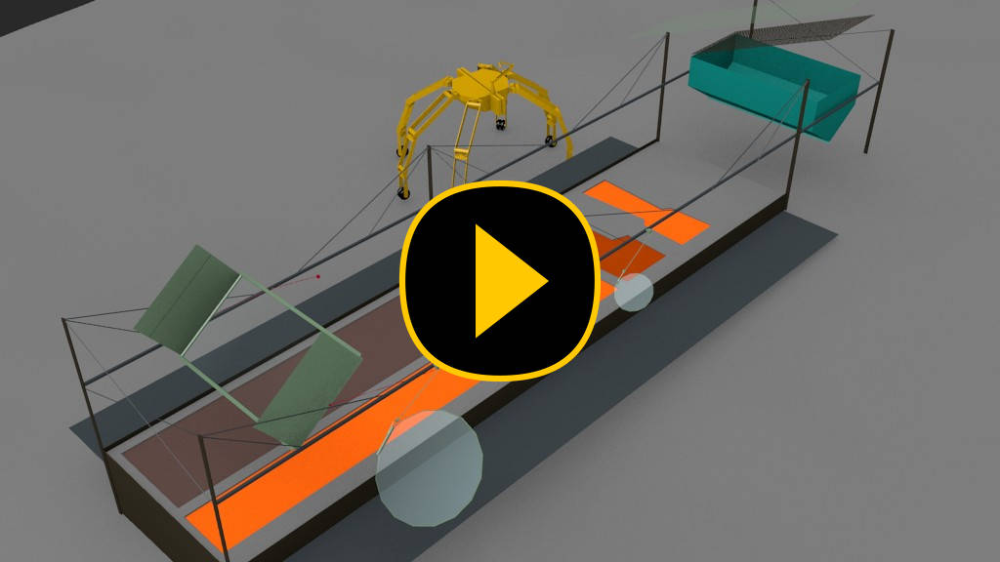

The Melt-In-Place stations need to be the backbone of early construction.
They can produce a wide range of useful items, a very wide range if the
rovers are agile enough to assist. They can produce materials in bulk, so if
the materials have some weaknesses, you can simply use more to compensate.